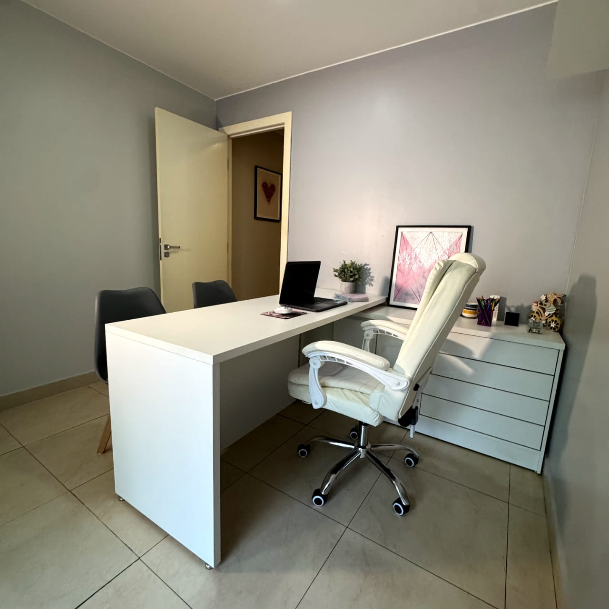

Espaço
Conheça o ambiente acolhedor onde realizamos os atendimentos



Especialista em Motricidade Orofacial
Agende sua consulta"Oriento crianças no desenvolvimento da força, coordenação e mobilidade dos músculos da face, boca e língua, fundamentais para mastigar, engolir, respirar e falar com mais clareza."
"Auxilio crianças a desenvolverem a fala de forma clara e adequada, trabalhando trocas de sons, atrasos ou dificuldades na articulação."
"Atuo com crianças que apresentam dificuldades de leitura, escrita, atenção e compreensão, fortalecendo as bases da linguagem que impactam diretamente o processo de aprendizagem."
"Ajudo a estimular o desenvolvimento da comunicação oral, ampliando o vocabulário e incentivando a produção de frases, promovendo a compreensão e a expressão verbal adequadas à idade da criança."
Sou formada em Fonoaudiologia pela UNIPLAN (2004) e, em 2014, conquistei o título de Especialista em Motricidade Orofacial pelo Conselho Federal de Fonoaudiologia. Também possuo capacitação no método Rest e, ao longo da minha trajetória, busquei constantemente aperfeiçoar meus conhecimentos. Realizei cursos complementares, como Eletroestimulação para Fonoaudiólogos, e aprofundei minha atuação em intervenção em linguagem infantil, sempre com o objetivo de oferecer um atendimento mais completo e eficaz. Meu propósito é ajudar pais e mães a superarem os desafios de fala de seus filhos, especialmente nos casos de trocas de sons e atraso motor de fala. Ofereço acompanhamento acolhedor, suporte individualizado e soluções eficazes, para que cada criança desenvolva sua comunicação com segurança, confiança e alegria.
Conheça o ambiente acolhedor onde realizamos os atendimentos
Encontre respostas para as perguntas mais comuns sobre fonoaudiologia infantil
O tempo para ver melhorias na fala do seu filho pode variar dependendo da gravidade do problema e da resposta individual ao tratamento. Geralmente, os pais começam a notar melhorias após algumas semanas de terapia, mas é importante lembrar que o progresso pode ser gradual.
Oferecer um ambiente de prática positivo e encorajador, seguir as orientações e exercícios fornecidos pelo terapeuta, e manter uma comunicação aberta para entender como você pode melhor apoiar seu filho são maneiras importantes de ajudar.
A duração do tratamento varia conforme a necessidade de cada criança e a complexidade do caso. Alguns casos podem ser resolvidos em alguns meses, enquanto outros podem necessitar de acompanhamento mais prolongado. A evolução é avaliada continuamente.
As sessões são individuais, proporcionando um atendimento personalizado e focado nas necessidades específicas de cada criança. Isso permite um melhor acompanhamento e evolução do tratamento.
Sim! A participação dos pais é muito importante e incentivada. Dependendo da idade da criança e do objetivo terapêutico, os pais podem acompanhar as sessões e receber orientações para continuar os exercícios em casa.
Agende sua consulta ou tire suas dúvidas
(61) 98344-8145
(61) 98344-8145
relvaloup@gmail.com
SEPS Q 705/905, Centro Empresarial Mont Blanc, Sala 26
Asa Sul, Brasília - DF
CEP: 70390-055
Clique no botão abaixo para falar diretamente pelo WhatsApp
Falar pelo WhatsApp